Instalar Git en Windows
Una vez descargado el instalador, haga doble clic en él para iniciar el proceso de instalación.
Personalmente, yo recomiendo cambiar un par de opciones predeterminadas:
- que Git busque actualizaciones diariamente
- que utilice Visual Studio Code como editor.
Estos son los pasos del proceso de instalación de la versión 2.33, similares a los de otras versiones:
- La primera pantalla muestra la licencia de Git (GPL 2, como el kernel Linux):
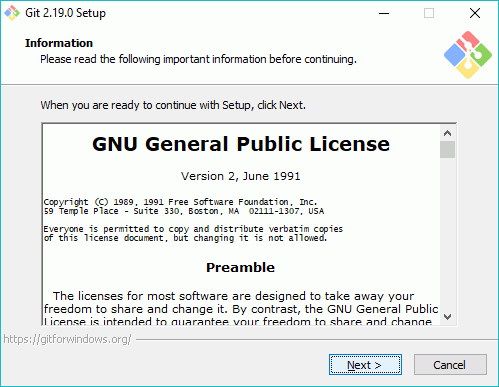
- La siguiente pantalla indica el directorio de instalación:
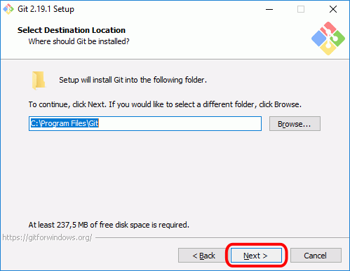
- La siguiente pantalla indica los componentes a instalar. Marque la casilla "Check daily for Git for Windows updates".
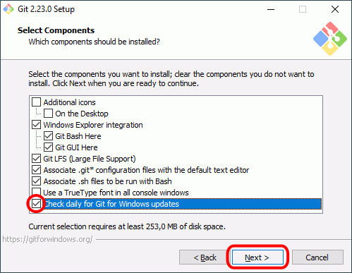
- La siguiente pantalla indica el nombre de la carpeta en el menú de Inicio:
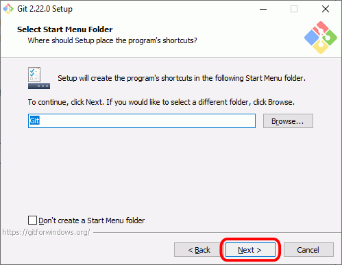
- La siguiente pantalla permite elegir el editor predeterminado. De forma predeterminada Git ofrece Vim, pero el propio instalador recomienda elegir un navegador gráfico.
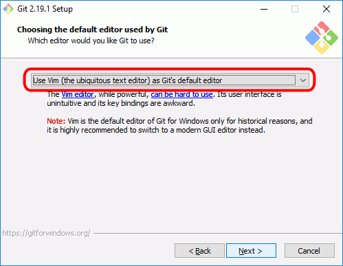
- Despliegue la caja de lista para elegir otro editor. En estos apuntes se recomienda elegir Visual Studio Code (Notepad++ es otro editor aconsejable).
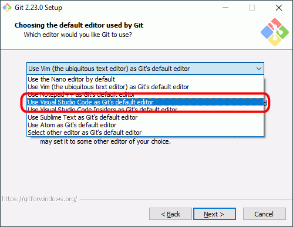
- Una vez elegido el editor, haga clic en "Next":
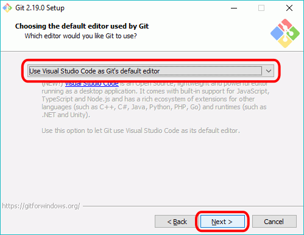
- La siguiente pantalla permite elegir el nombre de la rama principal de los nuevos repositorios. Tradicionalmente la rama principal recibía el nombre de master, pero desde hace años este término se ha visto envuelto en polémica ya que hay personas que lo consideran racista (ya que los términos master/slave se pueden traducir como amo/esclavo). La verdad es que en este caso esta opinión es discutible (por un lado, la relación amo/esclavo es independiente de la raza, y por otro lado, la palabra master en inglés tiene también el significado de "original", que es el que tiene sentido en este caso (master record es "grabación original") pero, de todas formas, muchos proyectos están modificando la denominación de master. Git todavía no ha decidido el cambio, pero GitHub ha empezado a utilizar el término main, que es el que elegiremos aquí.
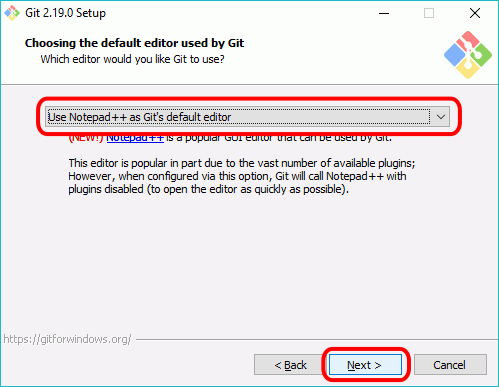
- La siguiente pantalla permite elegir el tipo de ventanas de terminal desde las que se podrá usar Git:
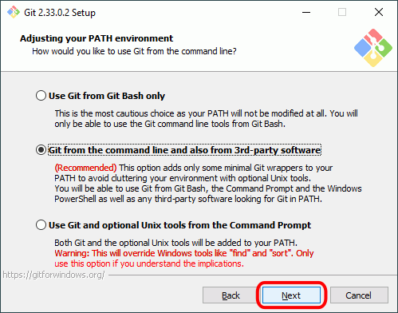
- La siguiente pantalla permite elegir el ejecutable SSH:
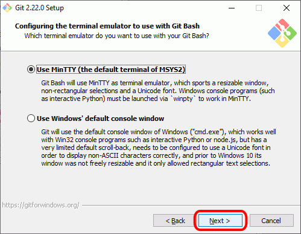
- La siguiente pantalla permite elegir la biblioteca SSL/TLS:
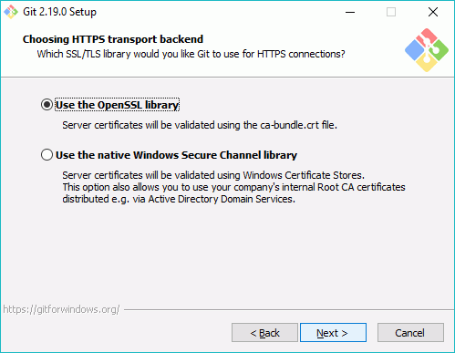
- La siguiente pantalla permite elegir el carácter de final de línea:
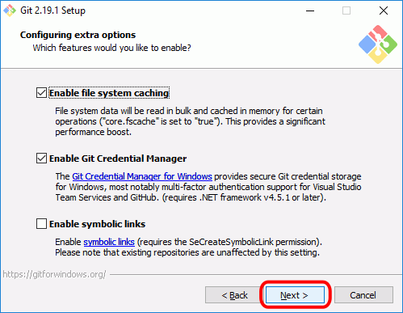
- La siguiente pantalla permite elegir el tipo de terminal de Git:
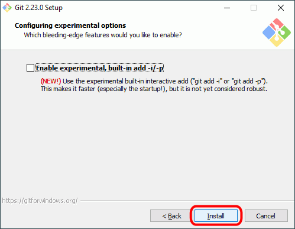
- La siguiente pantalla permite elegir el comportamiento de la orden "git pull":
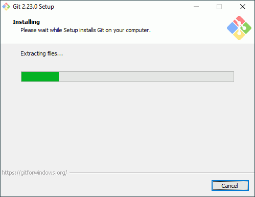
- La siguiente pantalla permite elegir el gestor de credenciales:
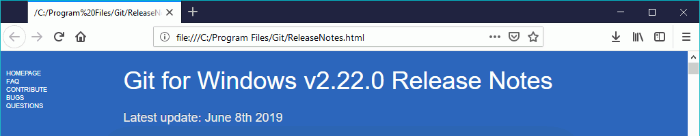
- La siguiente pantalla permite elegir algunas características extra:
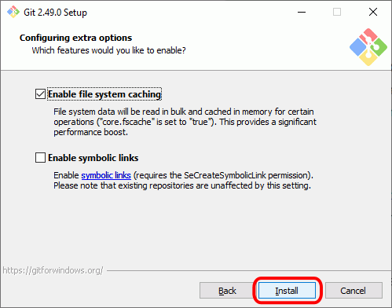
- La siguiente pantalla permite elegir algunas características experimentales (en algunas versiones no aparece esta pantalla):
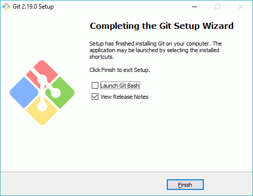
- A continuación se realizará la instalación, que durará unos segundos:
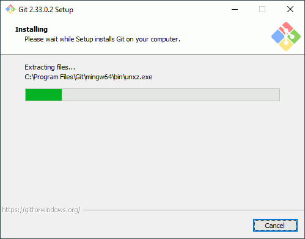
- Cuando termine la instalación se mostrará la pantalla final. Haga clic en Finish para cerrar el programa de instalación:

- Al cerrarse el programa de instalación, si se ha dejado marcada la casilla "View Release Notes" en la pantalla final, se mostrarán en el navegador las notas de la versión:
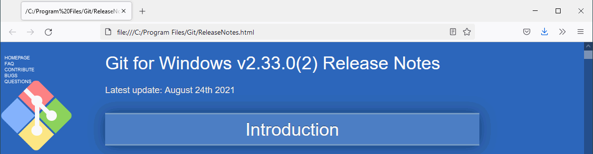